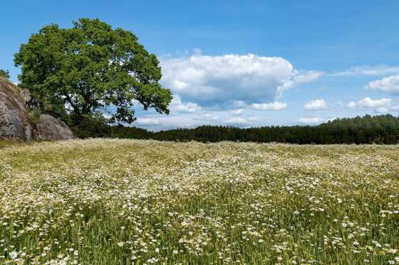
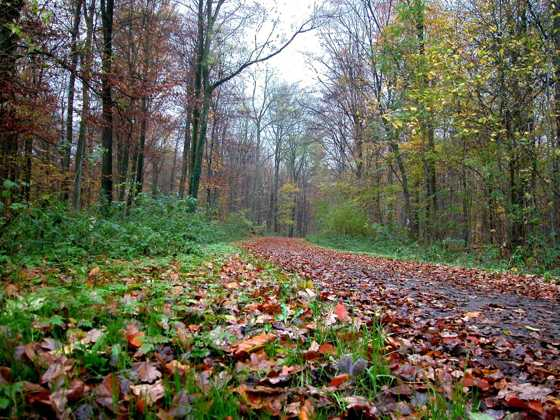
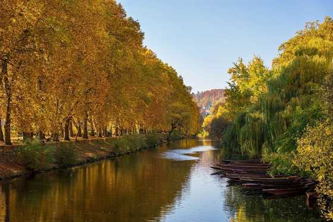
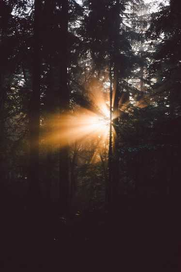
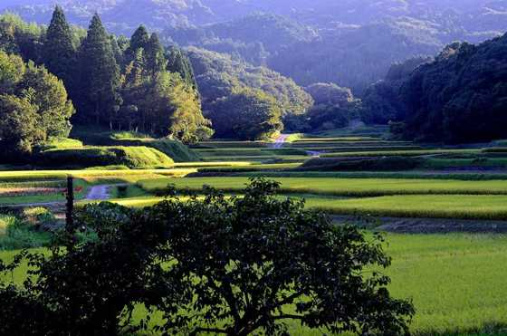
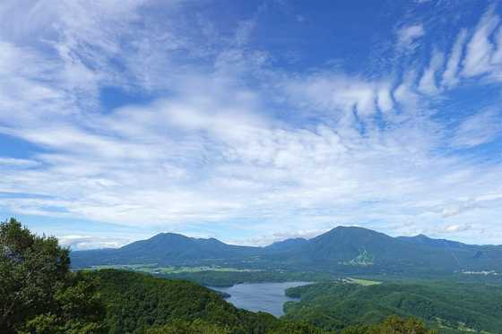

福島県二本松市・岳温泉 CAFE & STORE
丘で暮らすように、山を旅するように。
岳温泉の古い家で、ひと息。
温泉宿の木造家屋に、お茶とお菓子、東北のものが並ぶ場所があります。
イメージ
山と丘のほとりの景色
写真はフリー素材のイメージです。お店や岳温泉の実際の風景ではありません。



MENU
お茶と甘味、そしてストア




VOICE
こんなお声が届くかもしれません
以下は制作側が作成した創作のイメージ例です。実在の方の声ではありません。
イメージ例
温泉街を歩いたあとに立ち寄りました。中庭を眺めながら、ゆっくりお茶をいただけました。
イメージ例
ストアで東北のお菓子を選ぶ時間が楽しく、お土産にもちょうどよかったです。
イメージ例
古い木造の建物の落ち着いた空気で、旅の途中のひと休みにぴったりでした。
ABOUT
温泉宿のなかの、カフェ&ストア
「丘の暮らしと山の旅」は、岳温泉の全8室の宿「お宿 花かんざし」に併設されたカフェ&ストアです。紹介記事によると、建物は昭和初期に建てられた木造家屋で、宿泊者以外も利用でき、中庭を眺めながらお茶とお菓子をいただけるとされています。
情報源: 訪問ブログ / お宿 花かんざし 館内設備 / 食べログ
店名の意味やオーナーの想いは確認できていません。冒頭のコンセプト文は制作側のイメージです。



